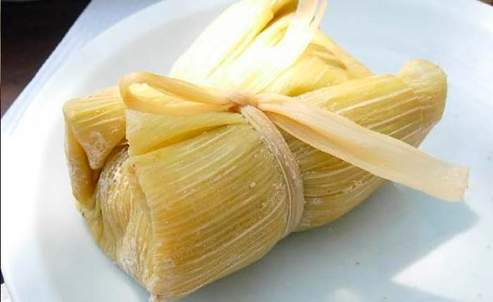
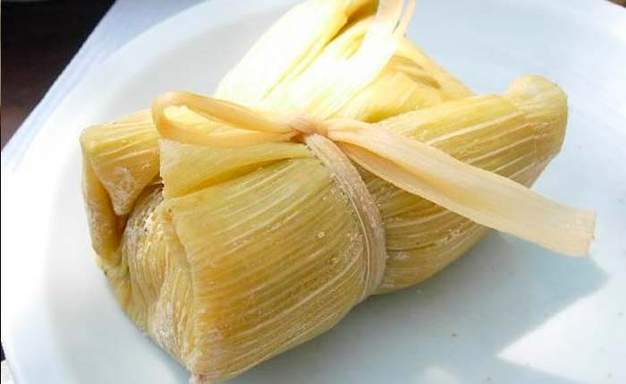

Ingredientes
- 6 choclos
- 3 cucharadas de margarina
- 1 taza de leche
- 1/2 taza de azúcar
- 1 cucharadita de canela
- 1/2 taza de pasas
- Pancas
- Pabilor
Utensilios
- Licuadora
- Olla
- Cucharón
La humita es uno de los platillos que como buen peruano debes probar pues la combinación de sus ingredientes como el maíz molido y el queso en combinación a su envoltura en pancas de maíz la hacen merecedora del reconocimiento como uno de los potajes más deliciosos de nuestro país.
Desgranar y licuar los choclos con la leche. En una olla derretir la margarina y vaciar el choclo licuado, el azúcar, la canela y las pasas. Cocer a fuego lento hasta que la mezcla tome cuerpo y se vea brillante. Dejar enfriar un poco. Luego remojar las pancas en agua hirviendo para suavizarlas. Escurrir las pancas y armar las humitas poniendo un poco de masa y cubrir con más masa. Después envolver y amarrar con pabilo. En el fondo de una olla poner las corontas desgranadas y un poco de de agua. Acomodar encima las humitas y cocinar con la olla tapada por 20 minutos y listo.
 



¿Quién alguna vez no ha probado una Leche Asada? Difícilmente tendremos una respuesta negativa, es como jamás haber comido un arroz con leche o mazamorra morada. Es el postre de vitrina, podemos encontrarlo fácilmente cerca de nuestra casa. Nunca falta en exhibición la famosa leche asada.
 Costa
Costa
 Postre
Postre

El maíz morado, por su alto contenido de antioxidantes, es un excelente aliado en la prevención de neoplasias como el cáncer de colon y de enfermedades cardiovasculares.
 Sierra
Sierra
 Bebidas
Bebidas

El arroz chaufa es un plato muy popular del Perú, pero su origen proviene de la cultura China, a lo largo de los años el arroz chaufa se ganó una gran popularidad en las mesas peruanas. Su preparación es bastante sencilla, básicamente freímos o tostamos un poco de arroz, le agregamos huevos, carnes picadas y otros ingredientes, eso es todo. Aunque esconde algunos secretos adicionales en su interior, así que no te pierdas esta receta paso a paso.
Costa
 Platillo
Platillo